Investigating Windows
Platform: TryHackMe
Type: Challenge
Difficulty: Easy
Link: Investigating Windows
Description
"A windows machine has been hacked, its your job to go investigate this windows machine and find clues to what the hacker might have done."
Environment and Artefacts provided
Windows live host - has been previously compromised according to the challenge description.
Task 1:
Determine OS details.
Analysis
Nice easy one to get started this one - no artefacts needed. Just open the Start Menu and search for "winver".
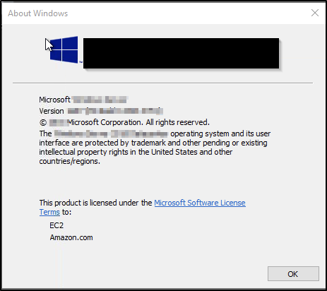
Answer
Whats the version and year of the windows machine?
Windows Server 2016
Task 2:
Determine user activity (generic).
Artefacts examined
File system.
Analysis
Another easy one - navigate to C:\Users in Windows Explorer and check the modifed date on the folders. Most recent data gives you the user that logged in the most recently.
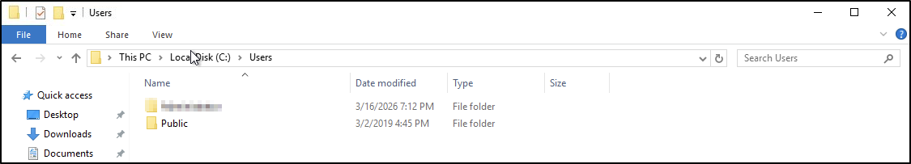
Answer
Which user logged in last?
Administrator
Task 3
Determine user activity (John).
Artefacts examined
Event logs; user objects
Analysis
This is where it started to get tricky. As I'd already seen, there was no user folder for the "John" user in C:\Users. I went on to open up Event Viewer and filter the Security log by Event ID 4624 (successful logon) but the logs were empty of any events with that ID. They were in fact empty of any events prior to the day I actually did the challenge so it would appear that whatever "compromise" has taken place on this machine included an event log clearance. I did a quick Google to find another way to determine the last logon timestamp for local user and found the following line of PowerShell that returns the information for all local users:
Get-LocalUser | Sort-Object LastLogon | Select-Object Name, Enabled, SID, Lastlogon
Opening a PowerShell window and using that command gave me the answer I was looking for:
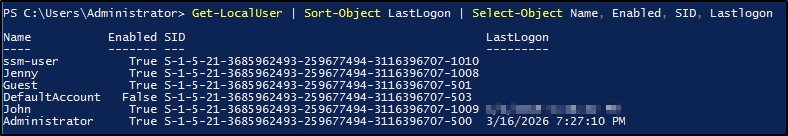
Answer
When did John log onto the system last?
03/02/2019 5:48:32 PM
Task 4
Determine network connectivity.
Artefacts examined
Scheduled tasks; file system; event logs; registry
Analysis
My first instinct here was to check for any scheduled tasks that opened on system startup.
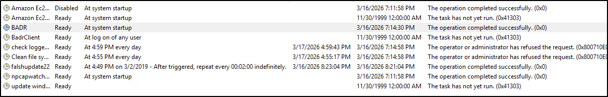
Clearly there were a couple of tasks there that felt out of place, but investigating the scripts associated with them didn't reveal any connections to IP addresses. Next up I moved to checking the security and system Event Logs for event 5156 (allowed connection) but came up empty there too. I moved on to check the Run key in the Registry (specifies programs that run on system startup) and finally found my answer.
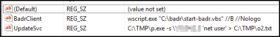
Answer
What IP does the system connect to when it first starts?
10.34.2.3
Task 5
Privilege enumeration.
Artefacts examined
Group object
Analysis
This was another fairly simple task - open Computer Management > Local Users and Groups > Groups. Right-click on the Administrators group.
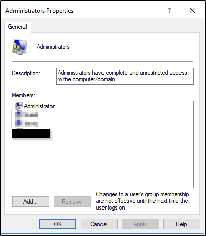
Answer
What two accounts had administrative privileges (other than the Administrator user)?
Guest, Jenny
Note: there were actually 3 user accounts in the group when I checked. The reasons for the 3rd user not being included in the answer at this stage will become clear as the challenge progresses.
Tasks 6, 7, and 8
Scheduled task enumeration
Artefacts examined
Scheduled Tasks
Analysis
Returning to the Task Scheduler (I had looked through it when checking for the startup IP address earlier), and having checked the "BADR" script files earlier (they appear related to the lab setup), there was only one Task that looked unusual. Checking the actions command for it provided the answers for tasks 6, 7, and 8 in one go.
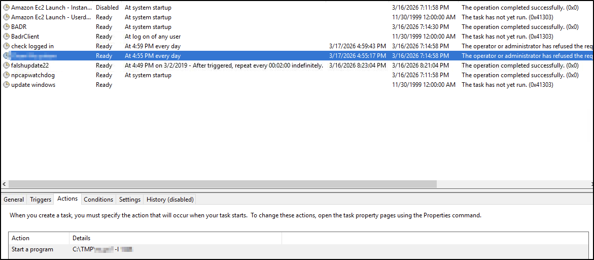
Answer (#6)
Whats the name of the scheduled task that is malicous.
Clean file system
Answer (#7)
What file was the task trying to run daily?
nc.ps1
Answer (#8)
What port did this file listen locally for?
1348
Task 9
Determine user activity (Jenny)
Artefacts examined
User object
Analysis
I had actually already unwittingly obtained the answer to this question earlier when determining the user activity for John. Returning to the output gave me the answer.
Answer
When did Jenny last logon?
Never
Task 10
Compromise timeline (foothold)
Artefacts examined
Task Scheduler
Analysis
Checking the date that the malicious Task was created gave me the answer for this.
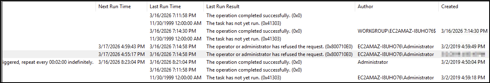
Answer
At what date did the compromise take place?
03/02/2019
Task 11
Compromise timeline (privilege escalation)
Artefacts examined
Event Logs
Analysis
The plan for me here was to check the Security logs for event ID 4735 (special privileges assigned), specifically the earliest of these events that took place on 03/02/2019. Just one issue with that - the Security logs had either rolled or cleared on my particular instance. Cards on the table for transparency - I turned to another walkthrough to see what was going on here - looks like I should have had access to those logs. The walkthrough gave me the answer for this one, but my technique was solid.
Answer
During the compromise, at what time did Windows first assign special privileges to a new logon?
03/02/2019 4:04:47 PM
Note: this is also the reason for not including that 3rd user for the earlier question - it's added to the Administrators group during the compromise, not before.
Task 12
Compromise timeline (lateral movement)
Artefacts examined
Registry; file system
Analysis
Checking the startup key in the Registry pointed me towards the location on the file system where output would be saved (C:\TMP). In that folder were two relevant looking files: an executable (mim) and another output file (mim-out). Checking the contents of the latter gave me the answer to this one.
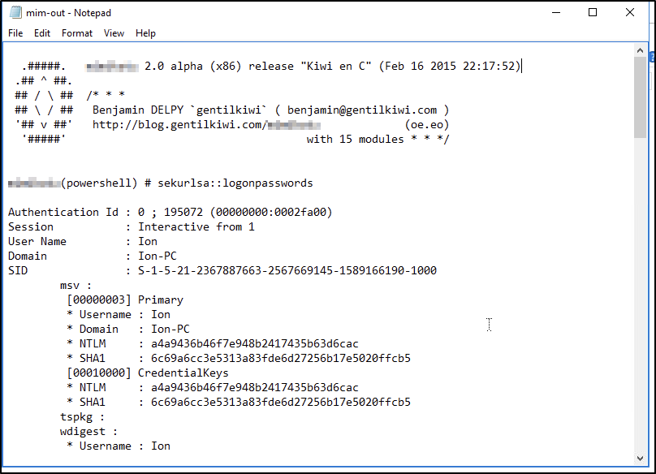
Answer
What tool was used to get Windows passwords?
Mimikatz
Task 13
Compromise timeline (command and control)
Artefacts examined
Hosts file
Analysis
Looking at the hosts file (C:\Windows\system32\drivers\etc\hosts) two websites with the same IP address:
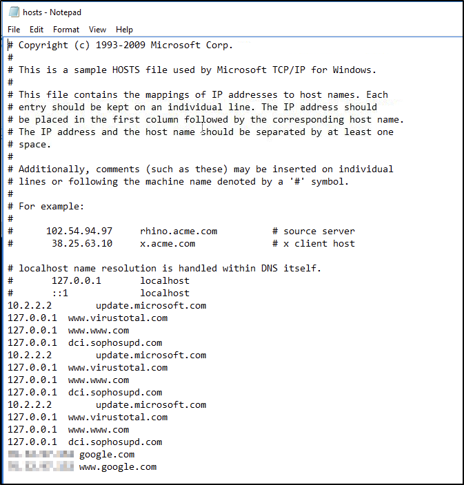
Answer
What was the attackers external control and command servers IP?
76.32.97.132
Task 14
Compromise timeline (persistence)
Artefacts examined
File system
Analysis
Checking the directory associated with a Windows web server (C:\inetpub\wwwroot) gave me the answer here:
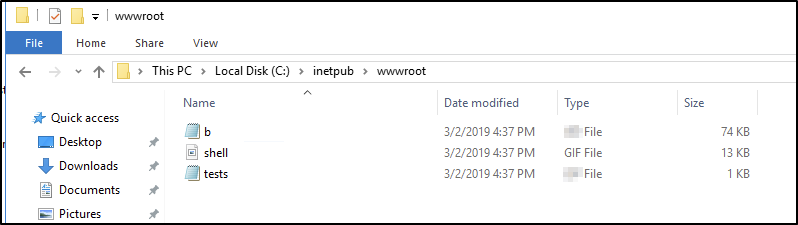
Answer
What was the extension name of the shell uploaded via the servers website?
.jsp
Task 15
Compromise timeline (command and control)
Artefacts examined
Firewall config
Analysis
Looking at the inbound rules in the Windows Firewall with Advanced Security MMC snap-in (because the question asks about "opening" a local port) shows a strangely named rule with a commonly used hacker port:
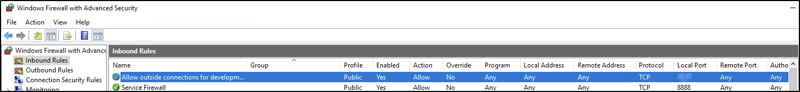
Answer
What was the last port the attacker opened?
1337
Task 16
Compromise timeline (command and control)
Artefacts examined
Hosts file
Analysis
Whilst checking the hosts file earlier, I had unwittingly already discovered the answer for this one.
Answer
Check for DNS poisoning, what site was targeted?
google.com
Tools Used
PowerShell Task Scheduler Event Viewer regedit
Date completed: 16/03/26
Date published: 16/03/26